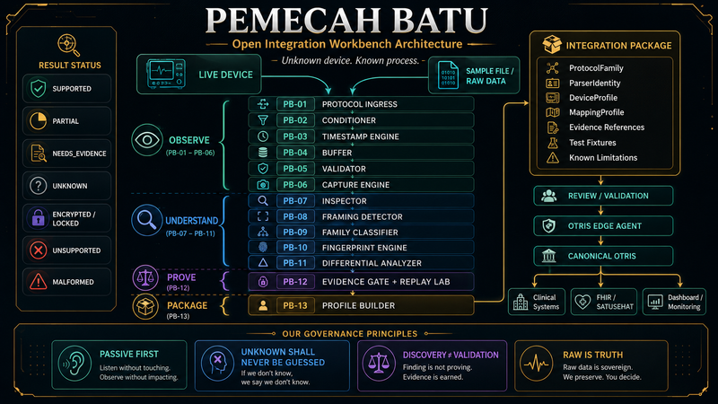

HARDWARE • EDGE INFRASTRUCTURE
OTRIS DOES NOT BUILD THE OPERATING THEATRE.
OTRIS CONNECTS THE TECHNOLOGY INSIDE IT.
OTRIS is a medical technology integration platform designed to connect existing medical devices, clinical data, and hospital systems through a governed integration architecture. Hospitals do not need to replace technology simply because systems cannot communicate with each other.
Keep what already works. Connect what already exists.

MEDICAL DEVICES
Patient Monitor
Anesthesia Machine
Ventilator
Infusion System
Medical Camera
Other Medical Devices
OTRIS DESTINATIONS
OTRIS CANONICAL
OTRIS CORE
CLINICAL WALL
HOSPITAL INTEGRATION
MEDICAL DEVICES→OTRIS GATEWAY→CANONICAL CLINICAL DATA→OTRIS CORE→CLINICAL WALL
01 / SYSTEM BOUNDARY
THE DEVICE IS THE SOURCE. THE GATEWAY IS THE BRIDGE.
SOURCEMedical Device
→
BRIDGEOTRIS Gateway
→
CLINICAL PLATFORMOTRIS Core / Clinical Wall
OTRIS focuses on technology and integration. Construction, civil works, and operating theatre development remain separate scopes performed by the appropriate providers.
INTEGRATION BEFORE REPLACEMENT. EVIDENCE BEFORE CLAIM.
02 / GOVERNED DISCOVERY
WHAT HAPPENS WHEN OTRIS MEETS A DEVICE IT HAS NEVER SEEN BEFORE?
NEW DEVICE
DEVICE: UNKNOWN
PROTOCOL: UNKNOWN
CLINICAL MEANING: UNKNOWN
CONNECT
DISCOVER
OBSERVE
CAPTURE
IDENTIFY
EVIDENCE
VALIDATE
INTEGRATE
OTRIS DOES NOT GUESS WHAT IT DOES NOT KNOW.
03 / RAW DATA → UNDERSTANDING
OBSERVE FIRST. INTERPRET WITH EVIDENCE.
7E 02 A4 96 03 FF ...
7E 02 A4 96 03 FF ...
FRAME STRUCTURE
REPEATING PATTERN
VARIABLE FIELD
STATUS INFORMATION
CANDIDATE MEANING
CANDIDATE ≠ VERIFIED.
RAW DATA→OBSERVATION→PATTERN→CANDIDATE→EVIDENCE→VALIDATION→CANONICAL DATA
Candidate meaning remains provisional until supported by evidence and validation.
04 / EVIDENCE CHECKPOINT
EVIDENCE GATE
UNKNOWN→CAPTURED→CANDIDATE→EVIDENCE-SUPPORTED→VERIFIED
VERIFIED→GOVERNED INTEGRATION
BLOCKED BRANCH · KEEP STATUS UNKNOWN
KEEP STATUS UNKNOWN
EVIDENCE BEFORE ASSUMPTION.
05 / CANONICAL BOUNDARY
DEVICE-SPECIFIC IN. GOVERNED DATA OUT.
DEVICE STREAM A
DEVICE STREAM B
DEVICE STREAM C
→
OTRIS GATEWAY
VALIDATION BOUNDARY
→
OTRIS CANONICAL CLINICAL DATA
OTRIS CORE
CLINICAL WALL
AUTHORIZED INTEGRATION
DEVICE-SPECIFIC COMMUNICATION ENDS AT THE EDGE. CLINICAL MEANING CONTINUES THROUGH OTRIS.
06 / LOCAL-FIRST
LOCAL CAPABILITY BEFORE CLOUD DEPENDENCY.
MEDICAL DEVICES→OTRIS GATEWAY→OTRIS CORE→CLINICAL WALL
CLOUD / approved synchronization · management · collaboration
07 / PHYSICAL CONNECTIVITY
THE PHYSICAL INTEGRATION BOUNDARY.
Gateway provides a controlled physical boundary for connecting existing medical equipment.
NETWORK
SERIAL
VIDEO
USB
DEVICE-SPECIFIC INTERFACE
INTERFACE CATEGORIES / SPECIFICATIONS NOT SHOWN.
08 / CONNECTION TO WIJOYO KUSUMO
A GOVERNED PATH FROM DEVICE TO CANONICAL DATA.
GATEWAYprovides access to device communication
→
WIJOYO KUSUMOsupports the governed process of understanding an unknown device
→
OTRIS CANONICALprovides the normalized destination after validation
09 / FINAL SYSTEM VIEW
ONE GATEWAY. MANY DEVICES. ONE GOVERNED INTEGRATION PATH.
MEDICAL DEVICES→OTRIS GATEWAY→DISCOVERY / EVIDENCE / VALIDATION→OTRIS CANONICAL→OTRIS CORE→CLINICAL WALL
Hospital SystemsFHIR-based IntegrationAuthorized External SystemsCloud Services
INTEGRATION BEFORE REPLACEMENT.
EVIDENCE BEFORE ASSUMPTION.
OTRIS
Technology for Medical Sovereignty.